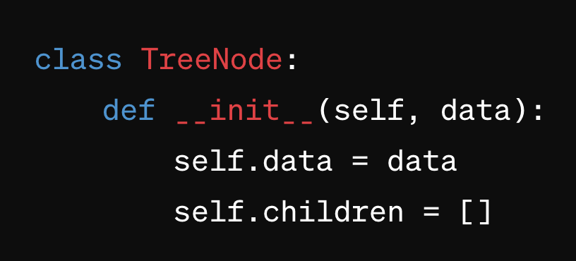

Python Data Structures
Understanding and mastering these data structures is crucial for effective Full Stack Web Development.
Built-in Data Structures
Lists
- Lists in Python are dynamic arrays that store elements in a sequential order.
- They are mutable, allowing for easy modification of elements.
- You can access, insert, and remove elements efficiently.
Tuples
- Similar to lists, tuples are ordered collections, but they are immutable.
- Once defined, elements cannot be changed.
- Tuples are useful for representing fixed collections of values.
Sets
- Sets are unordered collections of unique elements.
- They ensure that each element is distinct.
- Sets support various mathematical operations like union, intersection, and difference.
Dictionaries
- Dictionaries are key-value pairs, allowing you to map unique keys to corresponding values.
- They offer fast retrieval and are versatile for organising and accessing data.
User-defined Data Structures
Arrays
- Arrays are homogeneous collections of elements with a fixed size.
- They provide efficient indexing, making them suitable for numerical computations and storage.
Stacks
- Stacks follow the Last In First Out (LIFO) principle.
- Elements are added and removed from the same end, resembling a stack of plates.
- Stacks are useful for managing function calls, undo mechanisms, and parsing expressions.
Queues
- Queues adhere to the First In First Out (FIFO) principle.
- Elements are added at one end and removed from the other.
- Queues are crucial for managing processes, task scheduling, and breadth-first searches.
Linked Lists
- Linked lists consist of nodes where each node holds data and a reference to the next node.
- They offer dynamic memory allocation, enabling efficient insertions and deletions at any point in the list.
Trees
- Trees are hierarchical structures with a root node and child nodes.
- They are prevalent in organising hierarchical data, such as file systems or representing hierarchical relationships in data.

Graphs
- Graphs are collections of nodes connected by edges.
- They model relationships between entities and are fundamental in various applications, including social networks, transportation systems, and routing algorithms.
Hashmaps
- Hashmaps use a hash function to map keys to indices, providing fast key-based access to values.
- They are crucial for implementing efficient data retrieval and storage.